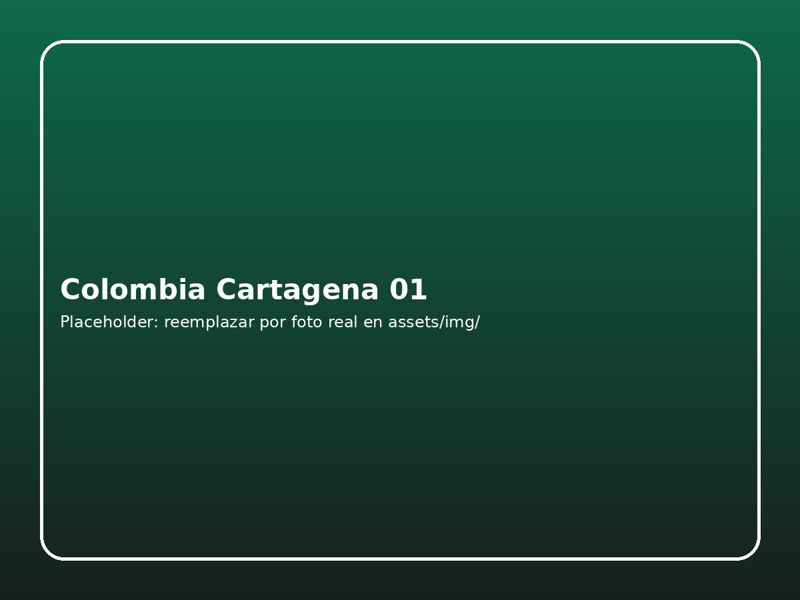

Detalle de la experiencia
Producto preparado para venta online o consulta asistida. Esta ficha puede conectarse luego con calendario, cupos, login de clientes, carrito y pasarela de pagos.
DestinoColombia · Cartagena
TipoRomántico
ModalidadPrivado o compartido
SoporteAntes, durante y después

Itinerario base
1
Recojo o punto de encuentro
Confirmación previa de horario, recomendaciones y asistencia para iniciar la experiencia sin complicaciones.
2
Experiencia principal
Recorrido guiado por los atractivos clave del destino, con tiempo para fotografías, interpretación local y pausas estratégicas.
3
Cierre y retorno
Retorno coordinado y soporte para conectar con hotel, aeropuerto u otra experiencia dentro de tu viaje.